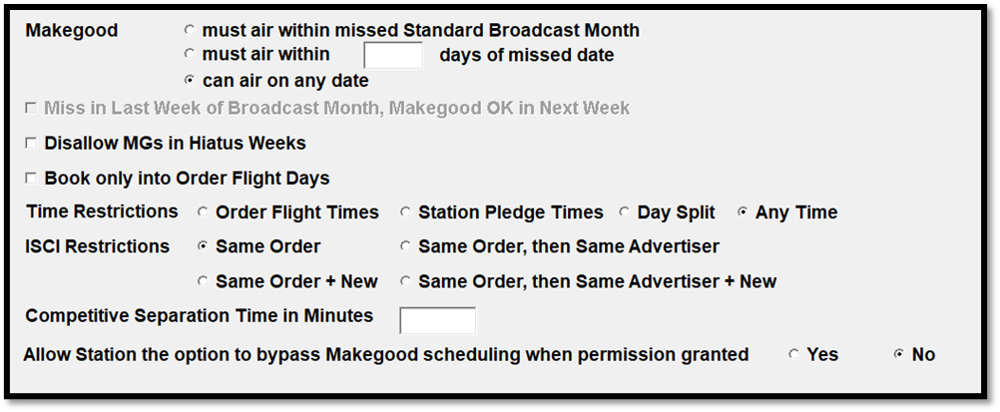

Web Makegood Policy
The Web MG Policy tab is used to define the rules for creating makegoods on the Counterpoint Affidavit website. For a makegood to get created successfully, the user-entered makegood information must pass the selected rules. If a station website user attempts to enter a makegood that would violate one or more of these rules, they will see a warning message that explains the first rule violation. For example, if the makegood setting “must air within missed standard broadcast month” is violated by entering a makegood date outside of the standard broadcast month that the spot was missed from, a warning message will appear that states that the makegood must be in the same standard broadcast month as the missed spot. Note that a single spot could violate several rules.

- Makegood
- Must air within missed Standard Broadcast Month: When this is selected, to create a makegood, it must be given an air date within the same standard broadcast month as the original missed spot. If this option is selected, the setting “Miss in last week of broadcast month, makegood OK in next week” below becomes available.
- Must air within X days of missed date: When this is selected, to create a makegood spot successfully, it must be given an air date within the number of days specified here.
- Can air on any date: When this is selected, when creating makegoods, the air date can be any date as long as none of the other date rules are violated (such as the “book only into order flight days” rule), and there is at least one spot from the same contract airing in the intended makegood week.
- Miss in last week of broadcast month, makegood OK in next week: If a spot was missed in the last week of the standard broadcast month, when this is checked on, it can be made good in the first week of the next broadcast month. (This option is only available if the “Makegood must air within standard broadcast month” radio button is selected.)
- Disallow MGs in hiatus weeks: When this is checked on, there must be at least one other spot for the same contract airing in the makegood week. If there isn’t at least one spot, the week is considered a “hiatus” week and the makegood cannot be created for that week.
- Book only into order flight days: When this is checked on, when creating a makegood, the makegood air date must be on one of the valid days of the week for the missed spot, using the daypart defined for the contract line.
- Time Restrictions: The Time Restrictions settings determine what makegood times are accepted. A warning message will appear if a station user attempts to enter a makegood time that violates the time restriction rule.
- Order Flight Times: When set to Order Flight Times, the makegood aired time must be within the ordered flight times (as defined on the contract daypart for exact time spots, or within the station pledge time range for ROS spots).
- Station Pledge Times: the makegood aired time must be within the agreed upon pledge time range for ROS spots, or within a standard daypart for exact time spots.
- Day Split: With the "Day Split" setting, spots missed between 12m-5a can be made good at any time. Spots missed between 5a-12m can only be made good between 5a-12m.
- Any Time: any makegood time is accepted.
- ISCI Restrictions: The ISCI Restriction setting is used to determine what rules apply to the makegood ISCI code.
- Same Order: the makegood ISCI must be the ISCI from the contract.
- Same Order, then Same Advertiser: if there’s no valid ISCI for the contract, it will be possible to select another ISCI for the same advertiser but from a different contract.
- Same Order + New: the user can select an ISCI from the same contract, or enter a new ISCI code.
- Same Order, then Same Advertiser + New: the user can select an ISCI from the same contract, or from the same advertiser but from a different contract, or manually enter a new ISCI code.
- Competitive Separation Time in Minutes: The number of minutes specified here will appear on the “Makegood Policy” shown on the CSI Electronic Affidavit website when creating makegoods.
- Allow station the option to bypass makegood scheduling when permission granted: When set to Yes, stations using Web Version 2 and that have the web makegood feature enabled will have the ability to create a "bypassed makegood" from a missed spot, which indicates that it will never be made good. When set to No, the "bypassed makegood" feature will be entirely hidden from station website users.
Starting with version 8.1, if web version 3 is used, then this tab is not shown, as the Makegood Policy settings are handled through the Counterpoint Affidavit system, in the Network Admin section. For more information, click here.